Chapter 25 Application of the Instrumental Variable Method: Mendelian Randomization
Katan, (1986) was concerned with the observational studies suggesting that low serum cholesterol levels were associated with the risk of cancer. As we have discussed, however, observational studies suffer from unmeasured confounding. Consequently, it is difficult to interpret the observed association as causality. In the particular problem studied by Katan, (1986), it is even possible that early stages of cancer reversely cause low serum cholesterol levels. Disentangling the causal effect of the serum cholesterol level on cancer seems a hard problem using standard epidemiologic studies. Katan, (1986) argued that Apolipoprotein E genes are associated with serum cholesterol levels but do not directly affect the cancer status. So if low serum cholesterol levels cause cancer, we should observe differences in cancer risks among people with and without the genotype that leads to different serum cholesterol levels. Using our language for causal inference, Katan, (1986) proposed to use Apolipoprotein E genes as IVs.
Katan, (1986) did not conduct any data analysis but just proposed a conceptual design that could address not only unmeasured confounding but also reverse causality. Since then, more complicated and sophisticated studies have been conducted thanks to the modern genome-wide association studies. These studies used genetic information as IVs for exposures in epidemiologic studies to estimate the causal effects of exposures on outcomes. They were all motivated by Mendel’s second law, the law of random assortment, which suggests that the inheritance of one trait is independent of the inheritance of other traits. Therefore, the method of using genetic information as IV is called Mendelian Randomization (MR).
127 Background and motivation
Graphically, Figure 40 shows the causal diagram on the treatment  , outcome
, outcome  , unmeasured confounder
, unmeasured confounder  , as well as the genetic IVs
, as well as the genetic IVs
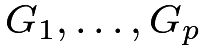
. In many MR studies, the genetic IVs are single nucleotide polymorphisms (SNPs). Because of pleiotropy, 50 it is possible that the genetic IVs have a direct effect on the outcome of interest, so Figure 40 also allows for the violation of the exclusion restriction assumption.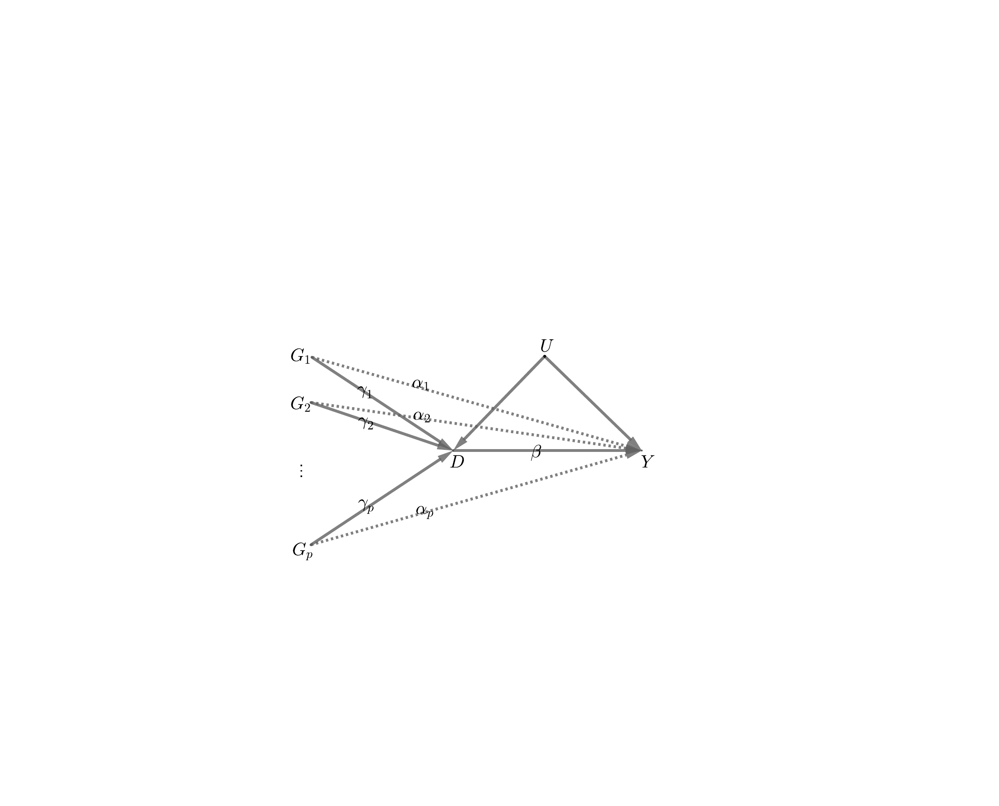
The standard linear IV model assumes away the direct effect of the IVs on the outcome. Definition 25.1 below gives both the structural and reduced forms.
Definition 25.1 (linear IV model)
The standard linear IV model
 |
 |
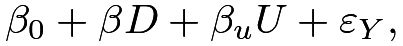 |
(122) | ||
 |
|
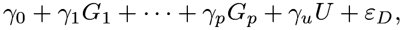 |
(123) |
has reduced form
|
|
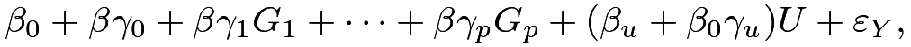 |
(124) | ||
|
|
(125) |
Definition 25.2 below allows for the violation of exclusion restriction. Then, are not valid IVs.
Definition 25.2 (linear model with possibly invalid IVs)
The linear model
|
|
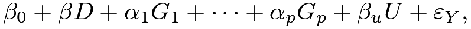 |
(126) | ||
|
|
(127) |
has reduced form
|
|
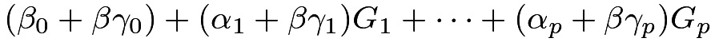 |
(128) | ||
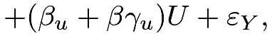 |
|||||
|
|
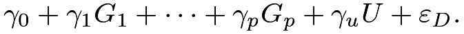 |
(129) |
Definitions 25.1 and 25.2 are slightly different from the linear IV model in Chapter 23. They include the confounder explicitly. But this slight difference does not change the discussion fundamentally.
In Definition 25.1 with exclusion restriction, we have
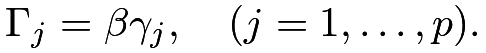 |
In Definition 25.2 without exclusion restriction, we have
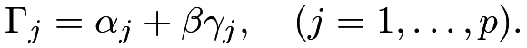 |
If we have individual data, we can apply the classic TSLS estimator to estimate  under the linear IV model in Definition 25.1. However, most MR studies do not have individual data but rather summary statistics from multiple genome-wide association studies. A canonical MR study with summary statistics has the following data structure.
under the linear IV model in Definition 25.1. However, most MR studies do not have individual data but rather summary statistics from multiple genome-wide association studies. A canonical MR study with summary statistics has the following data structure.
Assumption 25.1 (MR study with summary statistics)
(a)
We have the regression coefficients of the treatment on the genetic IVs 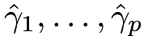 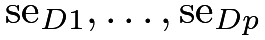
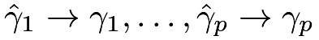 |
(130) |
in probability, and ignore the uncertainty in the standard errors.
(b)
We have the regression coefficients of the outcome on the genetic IVs 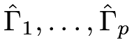 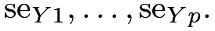
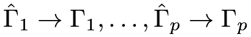 |
(131) |
in probability, and ignore the uncertainty in the standard errors.
(c)
Assume 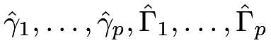
The asymptotic Normality of the regression coefficients can be justified by the CLT. The standard errors are accurate estimates of the true standard errors in large samples. Therefore, the only subtle assumption is the joint independence of the regression coefficients. The independence of the
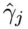
’s and the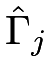
’s are reasonable because they are often calculated based on different samples.The independence among the ’s can be reasonable if the
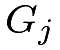
’s are independent and the true linear model for holds with homoskedastic error terms. See Chapter 31.D. However, this assumption can be tricky if the error term of the linear model is heteroskedastic. Without the independence of the ’s, it is hard to justify the independence. If the regression coefficients are from nonlinear models, then it is even harder to justify the independence. The independence among the ’s follows from a similar argument.
This chapter focuses on the statistical inference of based on the above summary statistics in Assumption 25.1.
128 MR based on summary statistics
128.1 Fixed-effect estimator
Under Definition 25.1,
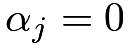
which implies that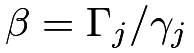
for all . A simple approach is based on the so-called meta-analysis (Bowden et al.,, 2018), that is, combining multiple estimates
. A simple approach is based on the so-called meta-analysis (Bowden et al.,, 2018), that is, combining multiple estimates 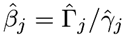
for the common parameter, also called the fixed effect. Using delta method (see Example 30.3), the ratio estimator 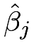
has approximate squared standard error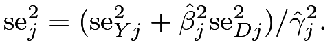 |
Therefore, the best linear combination to estimate is the Fisher weighting based on the inverses of the variances (see Problem AD.6):
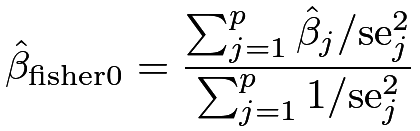 |
which has variance
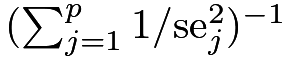
. Ignoring the uncertainty due to quantified by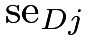
, the estimator reduces to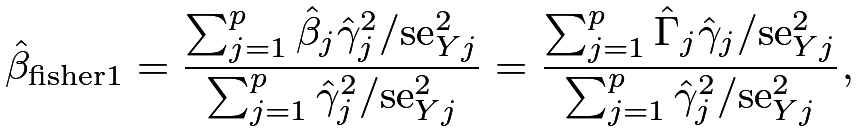 |
which has variance
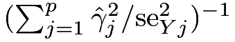
. Inference based on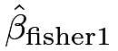
is suboptimal although it is more widely used in practice (Bowden et al.,, 2018). Both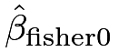
and are called the fixed-effect estimators.Focus on the suboptimal yet simpler estimator . Under Definition 25.2, we can show that
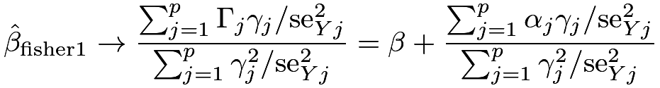 |
in probability.
If for all , is consistent. Even if this does not hold, it is still possible that is consistent as long as the inner product between
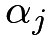
and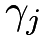
weighted by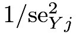
is zero. This holds if we have many genetic instruments and violation of the exclusion restriction, captured by , is an independent random draw from a distribution with mean zero.128.2 Egger regression
Start with Definition 25.1. With the true parameters, we have
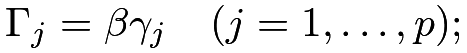 |
with the estimates, the above identity holds only approximately
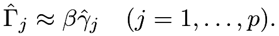 |
This seems a classic least-squares problem of
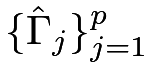
on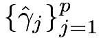
. We can fit a WLS of on , with or without an intercept, possibly weighted by , to estimate . The following results hold thanks to the algebraic properties of the WLS reviewed in Chapter 31.E.
, to estimate . The following results hold thanks to the algebraic properties of the WLS reviewed in Chapter 31.E.
Without an intercept, the coefficient of is
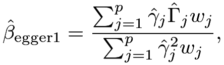 |
which reduces to if
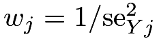
. The WLS is called the Egger regression. It is more general than the fixed-effect estimators in Section 128.1. With an intercept, the coefficient of is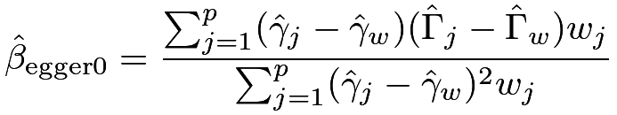 |
where
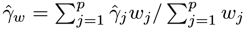
and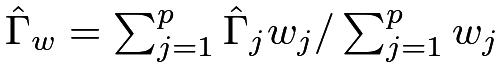
are the weighted averages of the ’s and ’s, respectively.Even without assuming that all ’s are zero under Definition 25.2, we have
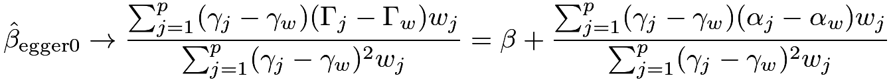 |
in probability, where
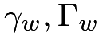
and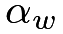
are the corresponding weighted averages of the true parameters. So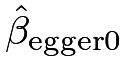
is consistent for as long as the WLS coefficient of on is zero. This is weaker than for all . This weaker assumption holds if and are realizations of independent random variables, which is called the Instrument Strength Independent of Direct Effect (InSIDE) assumption (Bowden et al.,, 2015). More interestingly, the intercept from the Egger regression is
which, under the InSIDE assumption, converges to
in probability. So the intercept estimates the weighted average of the direct effects.
129 An example
First, the following function can implement Fisher weighting.
I use the bmi.sbp data in the mr.raps package (Zhao et al.,, 2020) to illustrate the Fisher weighting based on different variance estimates. The results based on and are similar.
The Egger regressions with or without the intercept also give very similar results. But the standard errors are quite different from those based on Fisher weighting.
Figure 41 shows the raw data as well as the fitted Egger regression line with the intercept.
130 Critiques of the analysis based on MR
MR is an application of the idea of IV. It relies on strong assumptions. I provide three sets of critiques from the conceptual, biological, and technical perspectives.
Conceptually, the treatments in most studies based on MR are not well defined from the potential outcomes perspective. For instance, the treatments are often defined as the cholesterol level or the BMI. They are composite variables and can correspond to complex, non-unique definitions of the hypothetical experiments. The SUTVA often does not hold for these treatments. Recall the discussion in Chapter 2.
Biologically, the fundamental assumptions for the IV analysis may not hold. Mendel’s second law ensures that the inheritances of different traits are independent. However, it does not ensure that the candidate IVs are independent of the hidden confounders between the treatment and the outcome. It is possible that these IVs have direct effects on the confounders. It is also possible that some unmeasured genes affect both the IVs and the confounders. Mendel’s second law does not ensure the exclusion restriction assumption either. It is possible that the IVs have other causal pathways to the outcome, beyond the pathway through the treatment of interest.
Technically, the statistical assumptions for MR are quite strong. Clearly, the linear IV model is a strong modeling assumption. The independence of the ’s and the ’s is also quite strong. Other issues in the data-collecting process can further complicate the interpretation of the IV assumptions. For instance, the treatments and outcomes are often measured with errors, and the genome-wide associate studies are often based on the case-control design with the samples conditional on the outcomes (see Chapter 31.F.3).
VanderWeele et al., (2014) is an excellent review paper that discusses the methodological challenges in MR.
131 Homework Problems
25.1 Data analysis
Analyze the bmi.bmi data in the R package mr.raps. See the package and Zhao et al., (2020, Section 7.2) for more details.
25.2 Recommended reading
Davey Smith and Ebrahim, (2003) reviewed the potentials and limitations of MR.
脚注
50. Pleiotropy occurs when one gene influences two or more seemingly unrelated phenotypic traits.